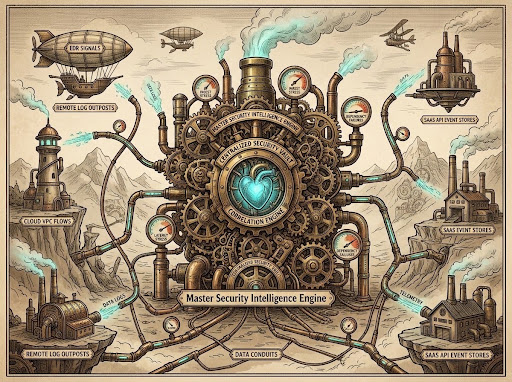
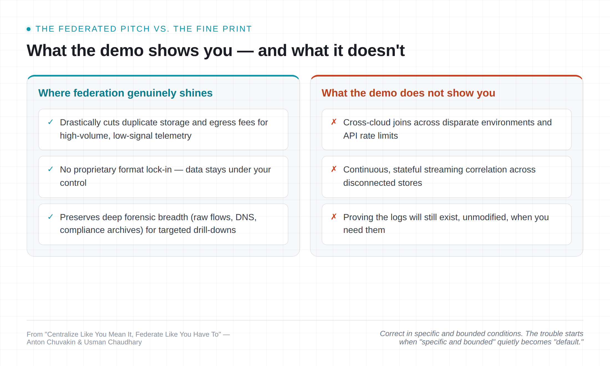
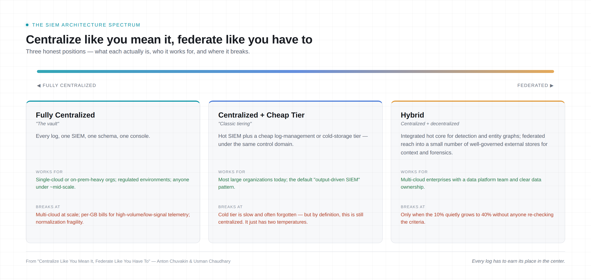
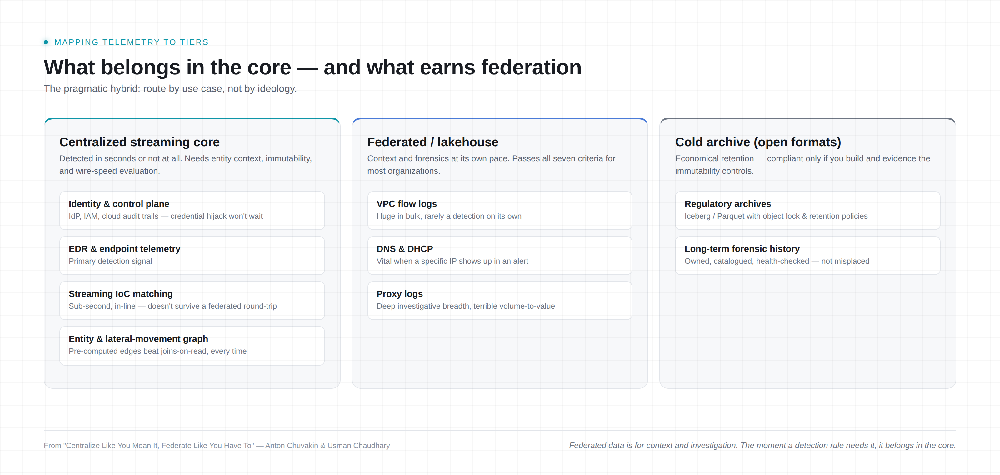

Not "is federation the future?" It is a future, not the future. The far more useful question: when, precisely, does federated SIEM actually work — and when does it blow up in your face at 2 AM?

Back in 2023, one of us wrote "Log Centralization: The End Is Nigh?" — an admittedly incomplete-thought blog with a scary premise: after 20+ years of yelling "centralize your logs!" (the earliest surviving deck is from 2003), we may be running out of places where centralizing all the logs is feasible, workable, or even worth the pain.
The conclusion then was cautious: centralize as long as you can, in as many places as you can, and augment with some form of centrally defined, lightly managed, highly distributed collection. By 2025 the position got more contrarian: the SIEM of 2027 will be roughly "90% centralized / 10% federated," and anybody promising you the inverse is selling a demo, not an architecture.
This post is the practical sequel. Not "is federation the future?" (it is a future, not the future), but the far more useful question: when, precisely, does the federated SIEM actually work — and when does it blow up in your face at 2 AM?
For more than two decades, SIEM tools ran on a simple covenant: collect all telemetry into one repository, pay for the ingest and the storage, normalize everything upfront into one grand schema, and query from one console. In the era of predictable on-premises networks this worked — and, frankly, it still works for a lot of organizations.
But multi-cloud sprawl, ephemeral infrastructure, hundreds of SaaS applications and now AI agents have strained it in four specific ways:
Here is the honest framing, unchanged since 2023: the problem isn't that the distributed approach is easy. The problem is that the centralized approach is getting harder as volumes, source counts, and geographic sprawl go up. And, as we keep saying in the output-driven SIEM context: if you collect, you pay. Somebody has to own the hard drives.
Into this gap stepped two families of technology alternatives:
Plus the classic third option that predates both — tiering: dump the "less useful" logs into cheap storage and pray to the security gods you never have to search them at speed.
The pitch is intoxicating: stop paying egress! stop duplicating data! just federate the search! It is also, in specific and bounded conditions, correct. The trouble starts when "specific and bounded" quietly becomes "default."

Federated search sounds magical until you are investigating a breach at 2 AM. Here are the costs and risks you actually have to swallow:
A federated query across three clouds and forty SaaS APIs is bounded by the slowest source, the tightest rate limit, and the coldest object-storage tier. It looks fast on a demo dataset sitting in one bucket. Cross-source joins on read are expensive by construction. The vendors know this, which is why the serious ones build distributed indexes at the source — but indexes must be built, refreshed, stored, and paid for.
And here is the trap from the 2023 post: if you deploy big indexers in every cloud, you haven't eliminated centralization — you've just created several smaller islands of it. That isn't inherently bad, but let's be honest about what you're doing: you aren't escaping the architectural tax of centralization, you're just trading one big central bill and management domain for three smaller ones that will each grow their own operational headaches over time.
This one is rarely on the slide. A centralized SIEM is one thing to harden, one SLA, one on-call rotation. A federated platform is a query engine whose answer depends on N independent sources being up, reachable, authenticated, and under quota — at the exact moment you need them.
You pay less for storage, and in exchange the overall resilience of your detection-and-response platform goes down. Every added source is an added dependency, and dependencies fail at the least convenient time, by definition.
Centralized platforms fail too — but that risk is priced, contractually owned, and covered by one SLA. In federation, you self-insure across N sources. In theory, people assume that "distributed systems" are somehow more resilient. In practice and in this case, they are clearly less so.
If you simply hope the logs will be there when your decentralized query tool reaches for them, you will be disappointed a lot. Sources get compromised, and attackers delete local logs. SaaS retention windows expire. A well-meaning admin "cleans up" a bucket. Then your IR consultant finishes the engagement and says: "Sorry, not sure what happened here — there were no logs — but here is the $100K bill for all the things we tried." Centralization has a cost, but once you pay it, you reliably own the logs. Federation gives you a pointer, not a possession.
Many mandates directly require collection and centralization. PCI DSS v4 Requirement 10.3.3, for one, expects audit logs to be promptly backed up to a secure and central log server (or other media that is difficult to modify). Security people love to mock regulations as outdated for the cloud era; in this case they are a stabilizing force, perhaps.
Yes, you can mitigate this in a federated model — object lock, versioning, WORM buckets, immutable retention policies, documented evidence that every source enforces them. But note who does that work: you, the client. The federated search vendor gives you a query layer; it does not give you an audit trail your QSA will accept, at least not without a stressful argument. Budget the engineering time — and the assessor's skepticism — accordingly.
Detection is not the same as search. Continuous complex event processing — stateful detection windows, multi-event sequences, streaming IoC matches at line rate — needs data flowing through one high-speed engine, normalized to something. Mapping blast radius and lateral movement across users, assets, and service accounts needs a persistent entity graph, not a multi-table join fired off on read.
If your algorithms rely on normalized logs, you will wait a very long time for all logs to be normalized "naturally" wherever they sit (OCSF or no OCSF). We have barely made centralized analytics work well; decentralized analytics is a research project, not a product category. In the age of AI-speed attacks, speed matters again.
A natively designed, integrated SIEM is simpler to run than a multi-component stack you assemble at home. A DIY lakehouse-plus-federated-search-plus-detection-layer is a data platform, and data platforms come with data platform engineers. If you do not employ them, you are not building a federated SIEM; you are building a science project with a SIEM logo. And when it breaks, you lose the underrated benefit of a "single face to scream at."
AI agents genuinely help here in one specific way: they are patient. An agent can fan out slow federated queries in the background without a human staring at a spinner. But "I didn't save any logs from X — hey agent, go get me the logs from X" does not work in real life. Worse, watch for the nastiest failure mode: an agent that reports "nothing found" when the truth is "source unreachable." In a centralized system that distinction is obvious. In a federated one it is a silent false negative, and automation bias will make sure nobody questions it. Always require explicit status reporting from agents so that absence of evidence does not become evidence of absence.
Yes, there is a middle path — but it is much closer to the centralized end than the vendor decks suggest. Three honest positions:

Two observations. First, the "classic tiering" position is where many organizations already live comfortably and should probably stay. Second, the jump from "hybrid" to "federation-first" is not a matter of degree — it flips who bears the assurance, compliance, and resilience burden from the platform to your engineering team.
Federation is not a wand; it is a tool for specific conditions. The discipline that matters is deciding — in writing, ahead of time — which bucket each source falls into, rather than discovering the answer mid-incident. For a given log source, federated/decentralized handling works well when all of the following hold:
If any criterion fails for a given source, the pragmatic answer is boring: centralize that source.
Rather than an all-or-nothing choice, modern architectures converge on an integrated high-speed core for continuous detection and graph correlation, coupled with open lakehouse federation for on-demand investigation.

The centralized approach to logs will work as long as it can and in as many places as it can — that sentence has survived three years and two blog posts unchanged, and we see no reason to retire it. The physics of cloud-scale data means we will augment the centralized brain with centrally defined, lightly managed, highly distributed collection and federated analysis. Fine. Just remember what you are buying: cheaper storage in exchange for assurance, resilience, speed, and compliance work that lands on your desk.
Choose the 10% wisely. Or prepare to explain either your cloud storage bill to the CFO, or your missing logs to the regulator — and only one of those conversations ends with a budget adjustment. We aren't going back to the 1980s where you need to telnet to see logs. But we are entering an era where every log has to earn its place in the center.